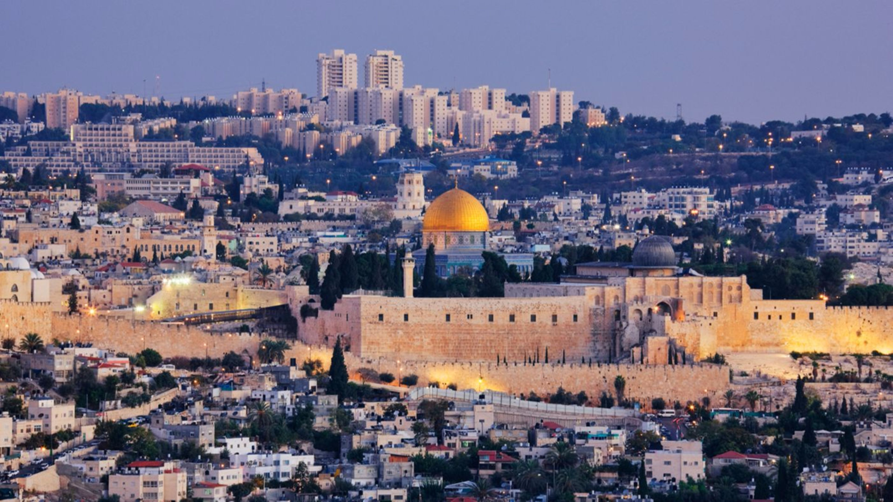

Israel, located in the Middle East along the eastern Mediterranean coast, is known for its rich historical and religious significance, being home to sacred sites like Jerusalem's Western Wall and the Dome of the Rock. Despite its small size, Israel has a highly developed economy, particularly renowned for its technological and innovation sectors. With a diverse population of around 9 million, the country blends ancient traditions with modern advancements, making it a unique and dynamic nation.
|  |
Top Attractions in Israel
- Jerusalem's Old City
- Masada
- The Dead Sea
- Tel Aviv's Beaches
- The Baha'i Gardens in Haifa
- The Sea of Galilee